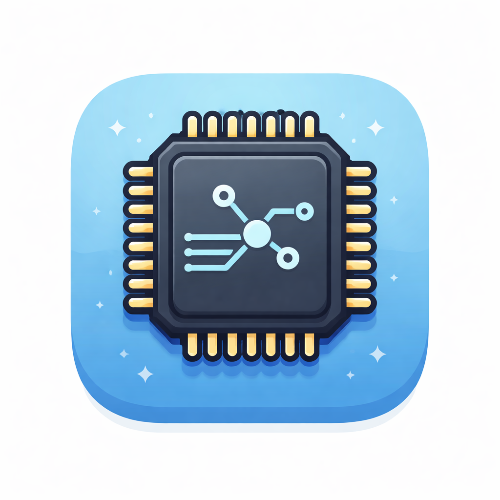

Embedded systems developer focused on communication protocols, hardware interfaces, and reliable software for embedded platforms.

I am an Electronics Engineer with strong interest in embedded systems, communication protocols, and hardware software integration.
My work focuses on low level device communication, protocol debugging, register level configuration, and building software tools that interact with embedded hardware systems.
I enjoy solving engineering problems that sit close to the hardware layer where software meets electronics.
C Programming, Embedded C, Linux based development
UART, RS485, I2C, serial device communication
Register configuration, protocol debugging, device control
Embedded C development, driver integration, backend communication logic.
Developed software modules to handle communication between embedded hardware devices and host systems. Includes frame parsing, checksum validation, and response processing.
Migrated low-level I2C and UART drivers from a custom embedded system to the Arduino environment. Reworked communication layers to align with Arduino frameworks, enabling stable hardware interfacing and accelerating testing workflows.
Implemented backend communication logic used by configuration tools to interact with hardware registers and device parameters. The work included frame construction, response parsing, and communication handling between host software and embedded devices.
Experience working with embedded systems software, serial communication protocols, hardware testing, and device configuration tools in Linux based development environments.
Outside engineering, I enjoy traveling and photography, capturing landscapes and outdoor environments.
Email: mydhilymrofficial@gmail.com
GitHub: https://github.com/mydhily-mr